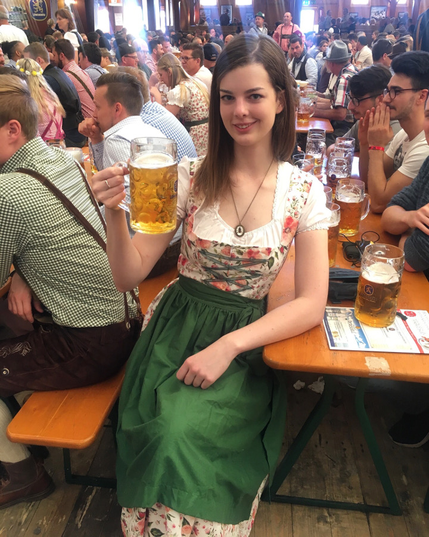
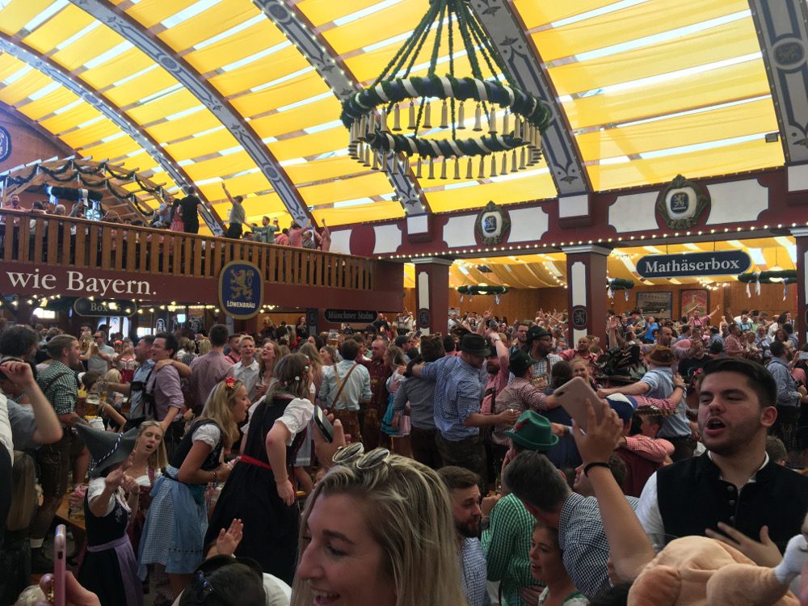
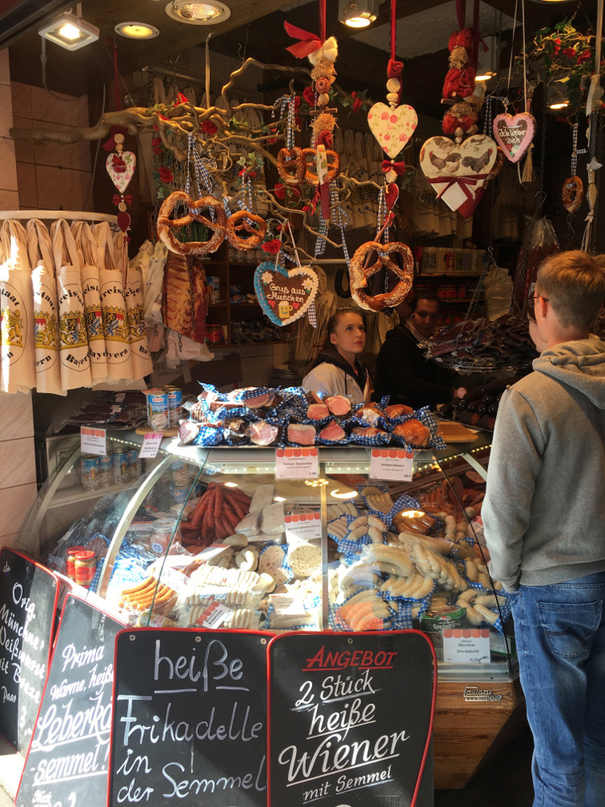
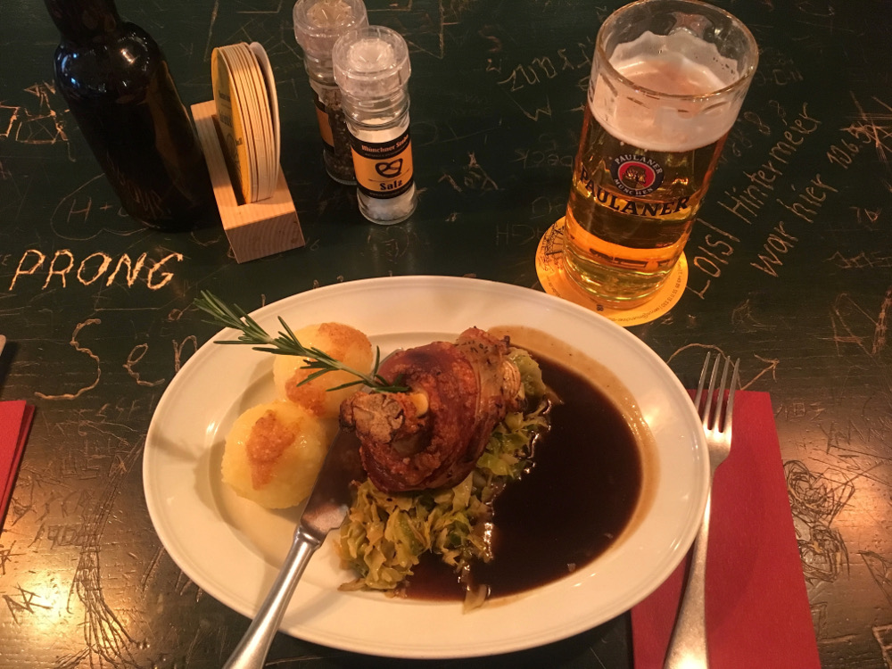

Last fall I traveled all the way to Munich, Germany for a week to celebrate Oktoberfest! I went there alone but after a couple of days I met up with my cousin who also happened to be going to Oktoberfest the same weekend. I had fun all week and it's still the best time I ever had while drinking. In fact, I'm considering going back next year! Here are my tips I wish I knew ahead of time!
What To Wear
Right when I arrived in Munich, I saw people wearing traditional dirndls and lederhosen and couldn’t wait to wear my own! I had sewed my dirndl because I’m really tall and was worried I wouldn’t be able to find something that fit properly. However, I think I could’ve gotten away with buying one in Munich because German people are also pretty tall and they had all kinds of sizes and styles! There were so many shops in Munich selling dirndls for roughly 200-300 euros for the entire outfit. This includes the dress, apron, and undershirt, and is really high quality. There were also rentals but I’m not sure how much it cost.
You can also order a dirndl online to take with you but some of them don’t look authentic and German people can tell the difference. For example, the zipper should be in the front and the skirt shouldn’t be too high above your knees. The white undershirt only goes to below your chest (like a bra) and is actually really comfortable!
I sewed my entire dirndl besides the undershirt!
Some of the men who go in a group match their shirts together and it’s cute. I didn't see any women matching outfits, but there's so much variety in the different dirndls that everyone can find exactly what they like! Women tie their apron on the left if single, right if taken, and in the back if a waitress or widowed.
As for hair, I wore mine down, but there are lots of cute braided hairstyles that look traditional with the dirndl. I've never learned how to braid my own hair, but if I go again I will definitely be learning how because it can get hot and sweaty after being drunk and dancing, and braids would’ve kept my hair from getting frizzy and in my face.
I brought a fanny pack for my money/phone and tied it under the table and it didn’t get stolen. It’s so hard to keep track of a purse or a loose wallet or phone, especially since the table gets wet and sticky from spilled beer later in the night. A dirndl with pockets would be ideal but when dancing items might fall out. I’m still not sure what the best way to do this is, but if I go again I might be looking into adding a secret pocket with a zipper to my dirndl!
The Festival
The most important thing you can do to ensure a good time is to arrive early, at least before 10am, and preferably between 9am-9:30am for an ideal spot in the tent. The tents are completely filled by 10:30-10:45am especially on the weekends, and if you have to wait outside you may be waiting for hours! The lines outside the tents weren’t organized and the men in charge of who gets in seem to be deciding arbitrarily. The tents are filled with long wooden tables that can hold 10-12 people each, and long bench seats to sit on. Waiters walk between the tables taking drink and food orders. There’s a band in the center of the tent that plays on and off during the morning, and then at night basically the whole time. They play a good mix of German songs and songs you’ll for sure recognize. Learn the “Ein Prosit” song and you’ll be good! As the day goes on, more and more people stand on the benches to dance, and at night the whole tent is dancing, drinking, and singing! Just make sure you aren’t standing on the table or else you’ll get kicked out.
Here are my main tips for drinking in the tents:
- When you “Prost” (German word for cheers), look the other person in the eye or it’s seven years bad sex!
- Different tents have different characteristics so research ahead of time and make a short list of which ones you want to go to. There are about 15 in total. I went to Hacker (fun and one of the most popular) and Lowenbrau (also fun but Germans look down on it because it has the most foreigners). Some of them are calm and kid-friendly, while some can get a bit raunchy, so picking your tent is important!
- Going in a small group is better so your table is mixed with people from different groups from all over the world. If you have a group of 10 you can reserve your own table months ahead of time, but I noticed those tables were having a lot less fun.
- Tip a lot (5 euros or so) when ordering your first drink and the waiters will keep coming back. The rest of the time you can tip 1-2 euros. If you don’t tip then you’ll get really slow service. The beers cost around 10 euros and food is 10-20 euros for a good size plate. Each stein of beer is about the size of 3 normal sized beers so it’s not a bad value. Also it will be the best beer you’ll ever have! I have no idea how they get it to taste so good.
- The beers are huge (1 liter), so if you keep drinking whole steins of beer one right after another you’ll get way too drunk by 1pm. It’s too easy to drink fast in the tents because the beers get warm before you can finish them. The menu has sparkling apple juice and half juice/half beer on the menu so either alternate your beers with juice or drink the half juice beers. I was able to last until 2am doing this! Other people who had been drinking full steins all day had to leave in the afternoon.
- There are different after parties at bars and venues you can go to after the festival or if you leave the festival early.
- There’s a hill people sleep on outside the festival if they’re too drunk to go home but it’s also a hill that people go to pee on…
- The bathrooms have attendants that want tips but I only tipped them once or twice. The lines for the bathrooms aren’t too bad and it was fun to talk to people. Make sure someone at your table saves your spot when you leave!
- Order food in the morning while everyone is still sitting down so you can actually eat it before people are dancing at the tables. Later in the day you can order a pretzel and eat it pretty easily standing up.
- If you get to the festival at night and can’t get into the tents, the old festival (Oide Weisen) costs 3 euros to get into and it’s also fun, just more calm and more older people. It’s how Oktoberfest was a few decades ago.
- Italian boys are really wild so watch out (This is a tip from my AirBnb host that ended up extremely accurate)
- The festival grounds have rides and food stalls and it’s cool to walk around at night. The food is actually reasonably priced and delicious.
- Don’t leave the tent if you want to get back in because sometimes you have to wait a very long time to get back in when the tents are full
- Some mornings were really cold (around 40º F) but don’t bring a jacket to the tent because it’s too annoying to keep track of. The tents are all warm and it heats up during the day
- Tents are cash only so make sure you have enough euros! Most tents had ATMs.
Old Festival
Safety
- I felt really safe the whole time I was in Munich. I walked to my AirBnb alone from my bus stop in pitch darkness for 20 minutes after a night of drinking and didn’t feel unsafe at all. (Don’t tell my mom!) My AirBnb hosts didn’t even lock their doors at night.
- The tents employ lots of beefy security guys, and I even saw people getting kicked out for being sketchy towards girls. I read online that the festival also employs 1000 nurses!
- There are some drugs in the tents most of it is fake cocaine that’s just menthol and sugar. You can buy it at the tents or in shops and if you’re feeling tired from being drunk for so long it kinda wakes you up a little bit. At first I thought it was real cocaine and the language barrier didn’t help. Once I figured out it was fake (thanks to the help of Google Translate on my phone), we had a good laugh about it!
- The airport has cheap SIM cards and you should get one so you can navigate around the city easily. I had to show them my passport and address where I’m staying in order to get it. Right when you land and leave the plane, connect to airport wifi and look up where the SIM card shops are. I think I spent $20 and didn’t even use half my data.
Munich in General

- Public transport is super easy there and Google Maps tells you exactly what bus and trains to take! A couple of times I hopped on a bus going the wrong direction but it’s easy to get back on the correct bus.
- Many Germans don’t speak conversational English and some of them get irritated at all the tourists during Oktoberfest. Sometimes when ordering food or coffee they would would get irritated and speak German to me even after I told them I couldn’t speak German! If they’re our age or younger I found their English to be good, but mid-30s and up it’s not so good.
- My first night there I went on a fun bicycling tour, Mike’s Bike Tours. Our guide was American and had a bunch of helpful tips for us. On my tour I met a group of Australians I hung out with that night and then I went to the festival with them the next day! Everyone in Munich, tourists and locals, were friendly once you get talking to them.
- Haufbrau beer house (not the tent at the festival) is really fun! It’s a restaurant and beer house with indoor and outdoor seating, packed with people having a great time.
- Munich has really interesting museums and churches you can tour. Dachau concentration camp is nearby and definitely worth going to. I booked a tour group and am glad I did because our tour guide was extremely knowledgeable and had so much to say that wasn’t even on the descriptions in the camp. Be prepared to want to cry after you’re done touring. I saved it for my last day in Munich and am glad I did because it made me so sad, but it's an impactful experience I’ll never forget.
- The second largest beer garden in the world is by the English Gardens. It’s outdoors with good food and steins of beer, and you can buy the stein for 3 euros while the tourist shops charge over 20 euros. The first largest beer garden in the world is outside Munich but my tour guide said its wasn’t as fun and it’s hard to get to.
- The food is amazing and I didn’t eat a single thing I didn’t like. Make sure you order pork knuckle!
- Bavaria, the German state that Munich is in, is like the Texas of Germany. People consider themselves Bavarian first and German second. Most of the traditional German things you think of are actually Bavarian!
- Uber exists but it just calls the taxis and is expensive. The trains run all night during Oktoberfest so it’s better to just take the train and walk the rest of the way home if it’s feasible.
- All the water is sparkling water! I think it tastes nasty and you have to ask for flat water if you want just normal water. My AirBnb had bottles of sparkling water so when I went out during the day I opened them and left the lids off in hopes that when I got home it would’ve gone flat. Nope, it was just as bubbly as when I left. That’s German engineering for you I guess!

Pork knuckle
Flights/Accommodations
- I booked my trip all the way in February. I flew out of MSP for $600, which is cheap for Oktoberfest times. My Airbnb was about $45 a night.
- All accommodations book up quick, and if you plan late you may be spending hundreds of dollars a night for a hotel room!
Questions? Comments? Don't hesitate to contact me!